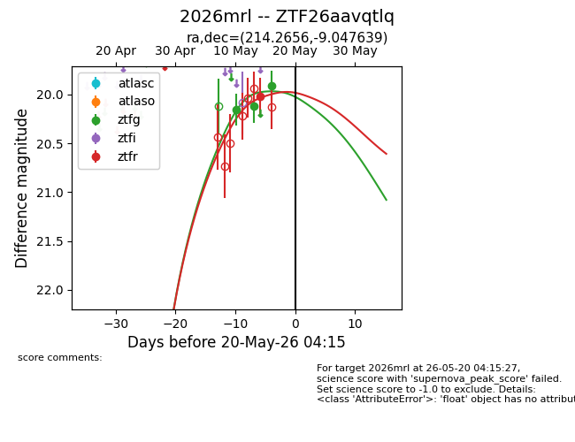
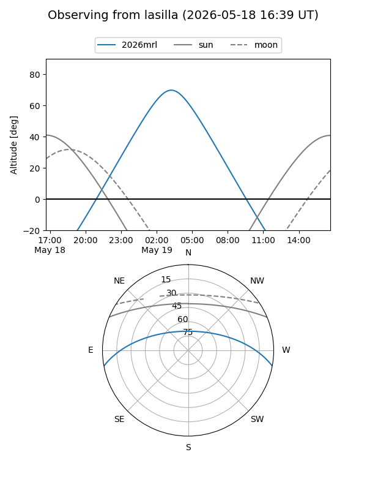
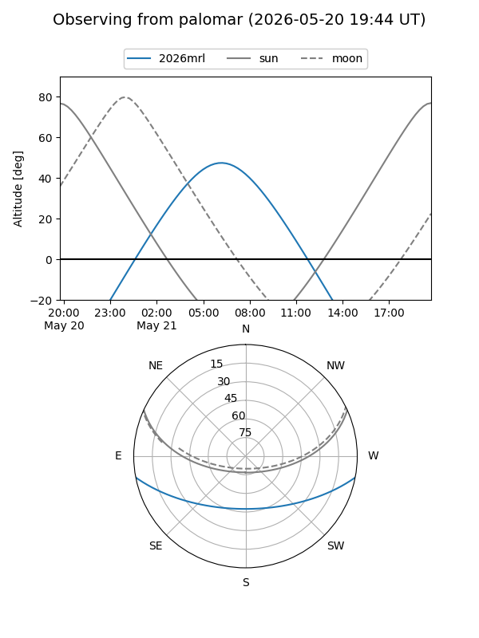
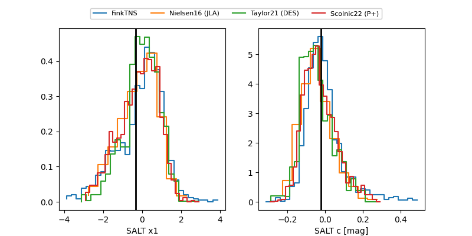

2026mrl
Target 2026mrl at 2026-05-20 04:17
Aliases and brokers:
FINK: link
Lasair: link
ALeRCE: link
TNS: link
YSE: link
alt names
ZTF26aavqtlq (ztf,fink_ztf)
2026mrl (tns,yse)
Coordinates:
equatorial (ra, dec) = 214.2656,-9.04764
equatorial (HMS+DMS) = 14:17:03.75,-09:02:51.50
galactic (l, b) = (335.7359,+48.29484)
Flags:
Photometry:
last ztfg=19.91, ztfr=20.02
3 ztfg, 1 ztfr detections
Lightcurve

Visibility


Additional plots
